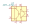
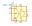
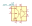
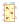

| Symbol |
Description |
ACPL-C790 | Description: Precision Isolation Amplifer, 3% Gain Tolerance, Bandwidth 200kHz, SSO-8
Keys: Isolation Amplifer
Datasheet: http://docs.avagotech.com/docs/AV02-2460EN |

ACPL-C79A | Description: Precision Isolation Amplifer, ±1% Gain Tolerance, Bandwidth 200kHz, SSO-8
Keys: Isolation Amplifer
Datasheet: http://docs.avagotech.com/docs/AV02-2460EN |
ACPL-C79B | Description: Precision Isolation Amplifer, ±0.5% Gain Tolerance, Bandwidth 200kHz, SSO-8
Keys: Isolation Amplifer
Datasheet: http://docs.avagotech.com/docs/AV02-2460EN |
ACPL-C870 | Description: Precision Optycally Isolated Voltage Sensor, 3% Gain Tolerance, Bandwidth 100kHz, SSO-8
Keys: Optycally Isolated Voltage Sensor
Datasheet: www.avagotech.com/docs/AV02-3563EN |

ACPL-C87A | Description: Precision Optycally Isolated Voltage Sensor, ±1% Gain Tolerance, Bandwidth 100kHz, SSO-8
Keys: Optycally Isolated Voltage Sensor
Datasheet: www.avagotech.com/docs/AV02-3563EN |

ACPL-C87B | Description: Precision Optycally Isolated Voltage Sensor, ±0.5% Gain Tolerance, Bandwidth 100kHz, SSO-8
Keys: Optycally Isolated Voltage Sensor
Datasheet: www.avagotech.com/docs/AV02-3563EN |

IL300 | Description: Isolated Linear Photocoupler, High Gain, Wideband, DIP8/SMD-DIP8
Keys: Isolated Linear Photocoupler
Datasheet: http://www.vishay.com/docs/83622/il300.pdf |